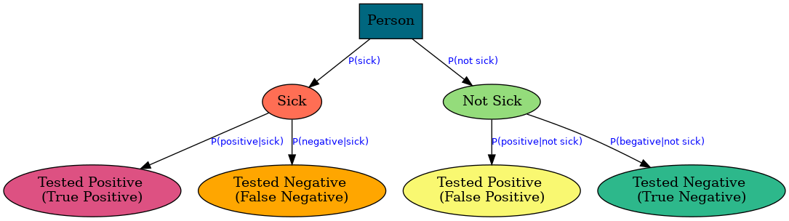

Brief Introduction
Bayesian inference, named after Thomas Bayes, has its roots in the 18th century, but it was not until the 20th century that its practical application really took off. It is a method of statistical inference that has been extensively used in various fields, such as science, engineering, and philosophy.
It is called "inference" because we are inferring or drawing conclusions from data. In the context of Bayesian inference, we are using data to update our prior beliefs and make predictions about future events. This updating process, where we infer the posterior probability from the prior and the evidence, is why it's called Bayesian inference.
Conditional Probability
Before get into Bayesian we need to get concept of conditional probability, which is a backbone of the Bayesian inference.
Conditional probability is a fundamental concept in probability theory and statistics. It is the probability of an event given the occurrence of another event. For instance, the probability of event A happening given that event B has occurred is represented as $P(A|B).$
Let's consider a an example to understand this concept better:
Example : Drawing a Card
Suppose I have a deck of 52 cards in my hand. I pick one card at random and ask you: What is the probability that the card I picked is "red colored 6 heart"? Given that I've provided no other information and have chosen the card randomly from the 52, the probability is 1/52, or 1.9%. This can be written as $P(Six\ Heart)=1.9\%$ .
However, if I provide additional information (data, evidence, whatever you call it), the probability will change. For instance, if I say, "The card I selected has a heart on it," you would know that there 13 cards with hearts on them. Therefore, if a card has a heart on it, there's a 1/13 or 7.7% chance it's a six heart. Mathematically, this is represented as $P(Six\ Heart|Heart) = 7.7%$% (which is read as "the probability of six heart GIVEN the number heart on it”) However, if I say "The card I chose has the number 6 on it," you would know that there are four cards with the number 6, one out of which are the 6 heart. Consequently, the probability of the selected card being red is 1/4, or 25%. Statistically, we represent this scenario as $P(Six\ Heart|Six) = 25\%$.
Did you notice how probability changed by just giving an extra piece of information (or based on the condition). At first it was only 1.9% then raised to 7.7% and in the last case it is 25%.
Bayesian Inference
Bayesian inference is a method of statistical inference that uses Bayes' theorem to update the probability of a hypothesis as more evidence or information becomes available. In Bayesian inference, the degree of belief in a hypothesis is updated as more evidence becomes available, using the principle of conditional probability. This results in the conversion of a prior probability into a posterior probability, which is a more accurate estimate based on updated evidence.
Bayesian in Plain English
Bayesian theory, in its simplest form, is all about updating our initial beliefs based on evidence or data. Let's consider several real-life examples to understand it better.
Car Accidents
Let's consider one more example involving the probability of a car accident. Suppose you believe that the chance of a car accident occurring is quite low, say 2%. This is your prior belief.
Now, let's assume you start driving at a significantly high speed, say 200km/hour. High speed driving is often a strong indicator of increased risk of a car accident. Upon knowing this, you would naturally update your belief about the probability of an accident. You might now think that there is a 60% chance of a car accident. This updated probability is your posterior belief.
In Bayesian terms, the initial 2% is the prior, the high speed driving is the evidence, and the updated 60% is the posterior. The process of updating your belief from the prior to the posterior, based on the evidence, is Bayesian inference.
Fire and Smoke
Let's consider another real-life example involving the probability of a fire in a building. Suppose you believe that the chance of a fire breaking out in a building is quite low, say 1%. This is your prior belief.
Now, let's assume you see smoke coming out of the building. Smoke is often a strong indicator of a fire. Upon seeing this, you would naturally update your belief about the probability of a fire. You might now think that there is a 70% chance of a fire. This updated probability is your posterior belief.
In Bayesian terms, the initial 1% is the prior, the smoke is the evidence, and the updated 70% is the posterior. The process of updating your belief from the prior to the posterior, based on the evidence, is Bayesian inference.
Sickness
Suppose a person goes to a doctor for a blood test and tests positive, indicating sickness. However, there's a possibility that the test could be false positive, meaning the person is not actually sick. Conversely, the test could return a negative result, suggesting the person is healthy. But there's a chance that the person is actually sick, a situation referred to as a false negative.

In the diagram above, a true positive represents the probability of testing positive when the person is indeed sick. However, a doctor typically works in reverse, determining the probability of a person being sick given a positive test result, because doctor don’t know if a patient is a sick or not at the beginning. All evidence the doctor has is the test result. So, the doctor need to infer/conclude if the patient is sick or not based on the fact/evidence on her hand. This method involves drawing conclusions (inferencing) from available data, which is referred to as Bayesian inference.
Bayesian in Mathematical Terms
Now, let's look at how this change of beliefs happening under the hood.
The fundamental formula of Bayesian statistics is expressed as follows:
$$
| positive) = \frac{P(positive |
|---|
$$
For our sick and not sick scenario, it would be:
$$
| positive) = \frac{P(sick) \cdot P(positive |
|---|
$$
The above formula can actually be expressed in terms of false positive and false negative terms as follows:
$$
P(sick|positive) = \frac{P(sick) \cdot P(true \ positive) }{P(sick) \cdot P(true\ positive) + P(not \ sick) \cdot P(false\ positive)}
$$
Alternatively, we can express it as follows: the numerator represents the true positive rate multiplied by the probability of sickness (likelihood or frequency of observing the sickness in the world, often challenging to ascertain initially). The denominator, on the other hand, represents true positive multiplied by sickness probability (as in the numerator), plus false negatives multiplied by the probability of not being sick outcomes. The denominator serves as a normalization factor, ensuring that when multiplying probabilities, which are real numbers between 0 and 1, the resulting posterior probability also falls within the range of 0 to 1.
---
Concept with Numbers
Now, let's perform a brief calculation to demonstrate how this scenario unfolds with real numbers.
A patient visits a doctor and undergoes a blood test, revealing the presence of a rare disease. Given the rarity of this illness, it affects only 0.01% of the population (1 person in 10,000).
The test falsely identifies 1% of cases where a person does not have the disease (false positives) according to the manufacturer.
Now, the crucial question arises: What is the likelihood that the patient is actually sick?
So, here is our numbers:
P(sick) = 0.01% (this is our prior belief!)
P(not sick) = 100% - P(sick)= 99.99%
P(positive|not sick) = 1%
P(positive|sick) = 100% - P(positive|not sick) = 99%
Great, we have all the necessary numbers at hand. Let's proceed with the calculation to determine the likelihood of the patient being ill.
$$
P(sick|positive) = \frac{P(sick) \cdot P(true \ positive) }{P(sick) \cdot P(true\ positive) + P(not \ sick) \cdot P(false\ positive)}
$$
$$
P(sick|positive) = \frac{0.01\% \cdot 99\% }{0.01\% \cdot 99\% + 99.99\% \cdot 1\% }
$$
$$
P(sick|positive) = 0.98\%
$$
---
However, the patient is now uncertain due to the positive test result and subsequent calculations indicating a 0.98% probability of having the disease. While this probability is relatively small, it marks a significant increase from the initial 0.01% likelihood. In fact, the disease is nearly 10 times more probable now.
The patient requests a repetition of the same test for confirmation. Unfortunately, the result is again positive. With this new information, let's recalculate. We can use the previous test's posterior as the prior for our new calculation, as we already have this data. Previously, our calculations were based on the disease's frequency in the general population.
P(sick) = 0.98% (this is our new belief!)
P(not sick) = 100% - P(sick)= 99.02%
since it is the same test, specifications are the same:
P(positive|not sick) = 1%
P(positive|sick) = 100% - P(positive|not sick) = 99%
$$
P(sick|positive) = \frac{0.98\% \cdot 99\% }{0.98\% \cdot 99\% + 99.02\% \cdot 1\% }
$$
$$
P(sick|positive) = 49.5\%
$$
Unfortunately, there's a significant shift in our confidence level, from an initial 0.01% to 0.98%, and then abruptly to 49.5%.
Are you curious about what the final number would be if we repeated the test a third time?
It would then be 98.9% likely that the patient has the disease.
---
Proof of the Concept
You might be wondering how this could happen, right? Let's clarify what we mean by probabilities.
Initially, we stated that the disease frequency, or likelihood, is 1 in 10,000 people. This means that only one person actually has the disease. However, the test has a 1% false negative rate. This means it incorrectly identifies 1% of the remaining 9,999 people as having the disease. On average, about 100 people will receive a false positive result even though they are healthy.
So, if we narrow our focus to only the 1 actual and 100 falsely identified people, there is only a 1 in 101 chance that the patient is the one correctly identified. This gives us a 0.99% chance, equals to the probability we calculated after the 1st test.
---
Closing Words
The beauty of Bayesian inference lies in its ability to draw sound conclusions about a hypothesis, even with a small amount of data.
However, another strength lies in the fact that regardless of your initial belief, if you have a large amount of data (evidence), your subsequent belief (posterior) will favor the data. This implies that you should be cautious about the news you follow and the videos you watch, or friends you are spending time with. If you consume misinformation over a long period, your beliefs may shift towards that information, even if it is incorrect, according to Bayesian theory.
Be careful with whom you travel, with whom you make friends. Because the nightingale leads to the rose and the crow leads to the garbage dump. (Rumi)